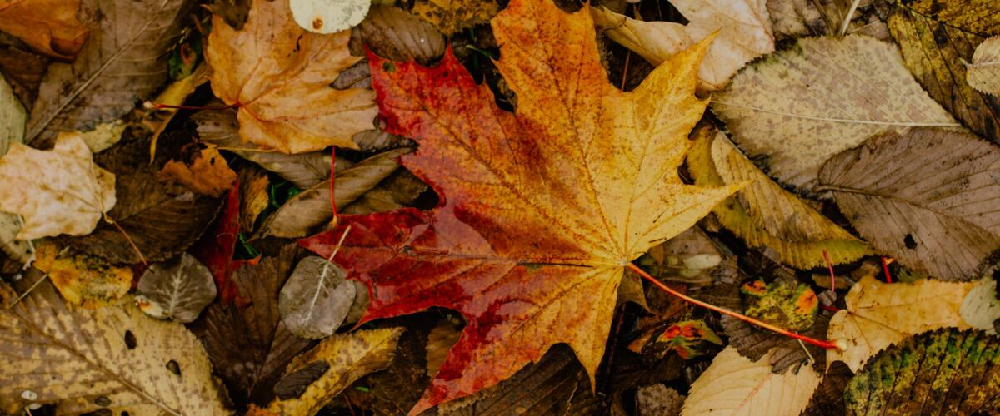
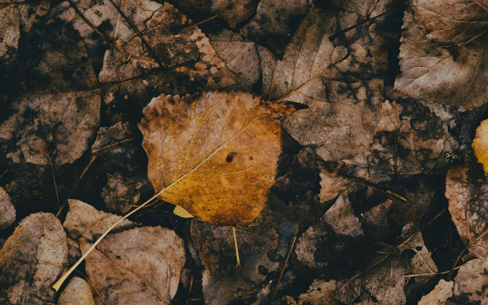

Beds, soil and water · Oregon · Washington · Idaho
Turning Fall Leaves into Leaf Mold and Mulch
The leaves piling up in your yard every October are the best free soil builder there is. How to make leaf mold, which leaves to use, and where to put it.
Every fall, Northwest yards and streets fill with maples, oaks and alders dropping their leaves, and plenty of them end up in yard-waste bins. That's a lot of free organic matter leaving the garden. With a little patience, those same leaves turn into leaf mold: a dark, crumbly, earthy-smelling material that holds water like a sponge and makes heavy soil easier to work.
Leaf mold isn't the same as compost. Compost is made mostly by bacteria, needs a mix of greens and browns, and works best when it heats up. Leaf mold is made slowly by fungi, needs nothing but leaves and water, and never has to be turned. Our wet, mild winters west of the Cascades are close to ideal for it.
Which leaves to use
- Good: maple, alder, birch, ash, cherry, linden and fruit tree leaves break down fastest. Oak and beech leaves work too, but take a year or two longer.
- Use sparingly: bigleaf maple leaves are huge and mat into a waterproof layer unless shredded first.
- Leave out: black walnut leaves, which carry a compound that stunts tomatoes and other plants; laurel and holly, which are thick and waxy and take years; and any leaves that were sprayed or came from beside a busy road. Conifer needles break down very slowly, so keep them to a small share of the pile.
- Diseased leaves: apple and pear leaves spotted with scab, and fallen fruit, are better bagged for the yard-waste bin, where commercial composting runs hot enough to kill disease.
Making leaf mold
- Shred if you can. Running a mower over a pile of leaves, with the bag on, cuts the time roughly in half and stops matting. Whole leaves work too; they just take longer.
- Pile them up. A ring of wire fencing or chicken wire about 3 to 4 feet across makes a tidy bin. In a small yard, fill a few black garbage bags, poke a dozen holes in each with a garden fork, and tuck them behind a shed.
- Get them wet. Leaves need to stay damp to rot. West of the Cascades, winter rain handles this for you. In drier eastern and high desert gardens, soak the pile as you build it and check it again in spring, when it should feel like a wrung-out sponge.
- Wait. Shredded leaves give a rough, usable leaf mold in about 6 to 12 months. Whole leaves take one to two years to become fine, dark and crumbly. You don't need to turn the pile, though mixing it once in spring speeds things up a little.
A heap of leaves left in a cold, dry corner can sit unchanged for years. If yours isn't breaking down, it's almost always too dry.

Where to use it
- As mulch. Half-rotted leaf mold makes a good mulch around perennials, shrubs and blueberries, which like the slightly acidic, woodland-style layer it makes. Keep it a few inches back from stems.
- Worked into beds. Spread an inch or two over vegetable beds in spring and fork it lightly into the top few inches. It improves how sandy soil holds water and how clay soil drains, though it adds few nutrients, so keep feeding your crops as usual.
- In seed and potting mixes. Fine, two-year leaf mold sifted through a screen is a classic replacement for peat in homemade seed-starting mix. Mix it about half and half with compost or bagged potting soil.
- On top of fall plantings. A loose layer over a freshly planted garlic bed or a dormant rhubarb crown keeps winter rain from crusting the soil.
Fresh leaves as a winter blanket
You don't have to wait a year to get some use out of your leaves. Shredded fresh leaves spread a few inches deep over empty vegetable beds protect the soil all winter, and by spring much of the layer will have been pulled in by worms. Rake back whatever is left a few weeks before sowing so the soil can dry and warm, especially where you'll sow lettuce or other early crops that slugs love.
Our guide to putting the garden to bed covers the rest of the fall cleanup, and winter cover crops are the other good way to keep beds covered until spring.